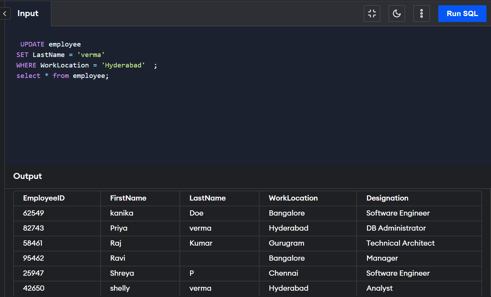

The update command is a DML command used to update a table's records. The SET keyword is used in the update command.
The WHERE clause is also used in the update command for updating single or multiple columns of the table.The update command is a DML command that works on the records of a particular database table.
The primary function of the update query in SQL is to update single or multiple records of the table.
The update command takes tableName and a set keyword for updating the table's records. We can also use the while clause in the update command. That's why we can update multiple records at the same time.
Syntax:
UPDATE tableName
SET column1 = value1, column2 = value2, ...
WHERE condition;
